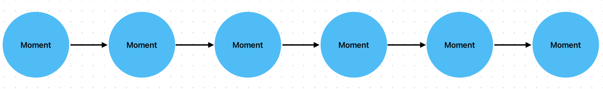
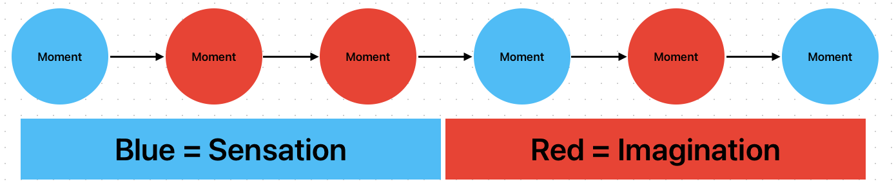
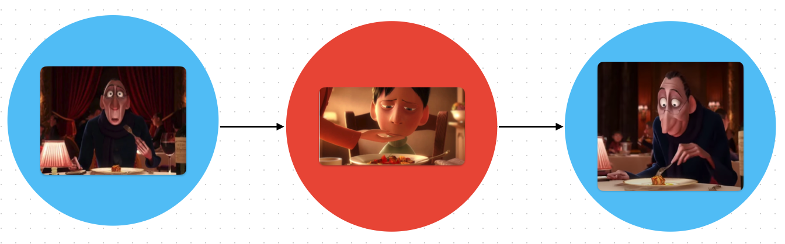
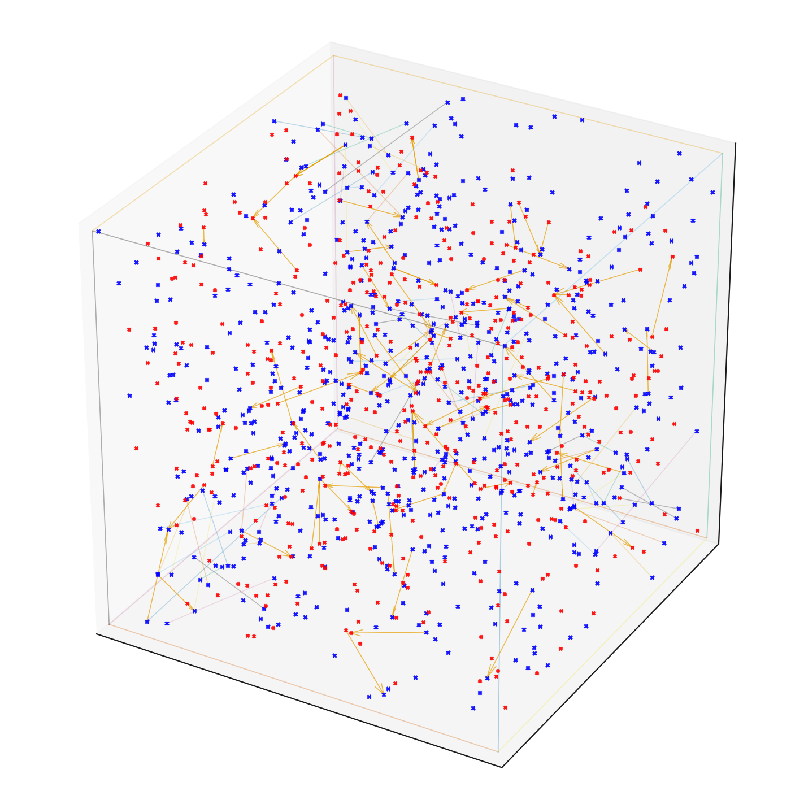

If this is a moment.
Then life is something like this.

You can group moments into sensation & imagination.

Some examples…
| Sensation | Imagination |
|---|---|
| Hearing yourself speak. | Hearing your internal monologue. |
| Hearing music. | Hearing a melody that’s stuck in your head. |
| Seeing an elephant. | Picturing an elephant that isn’t there. |
They can activate each other.

You can start to model your life as a space of possible moments.

You can define a few terms using this framing:
World Model: How closely imagination predicts sensation.
Non-Duality: Being fully aware of the current moment (as it).
Concentration: Experiencing more moments within a smaller area of the
graph.
Metta: Concentrating on: Suffering -> Compassion & Happiness
-> Empathy
There are words in neuroscience for when imagination gets really close to reality, like “motor imagery”.
Is there a word for constraining (subjective) experience to only imagination or sensation?